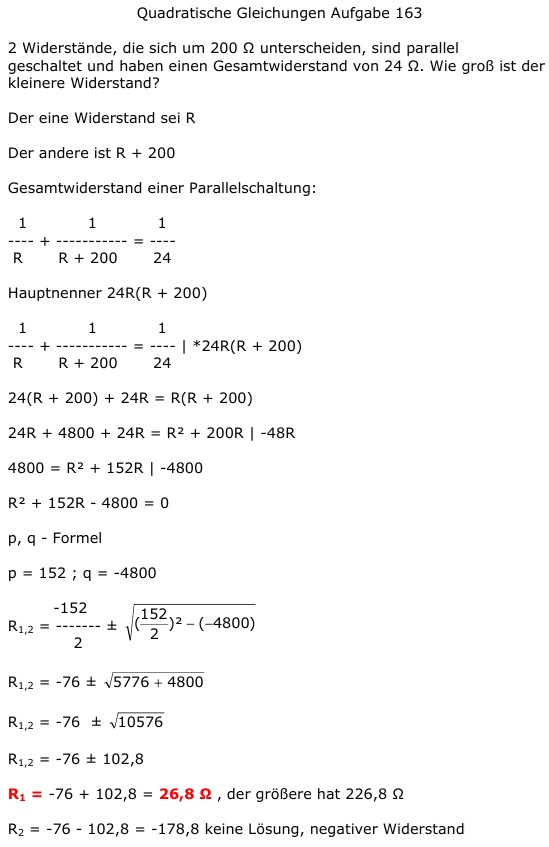

Aufgabe 163 2 Widerstände, die sich um 200 Ω unterscheiden, sind parallel geschaltet und haben einen Gesamt- widerstand von 24 Ω. Wie groß ist der kleinere Widerstand? Der eine Widerstand sei R Der andere ist R + 200 Gesamtwiderstand einer Parallelschaltung: 1 1 1 --- + ---------- = ---- R R + 200 24 Hauptnenner 24R(R + 200) 1 1 1 --- + ---------- = ---- |*24R(R + 200) R R + 200 24 24(R + 200) + 24R = R(R + 200) 24R + 4800 + 24R = R2 + 200R |-48R 4800 = R2 + 152R |-4800 R2 + 152R - 4800 = 0 p, q - Formel p = 152 ; q = -4800  R1,2 = -76 ± 102,8 R1 = -76 + 102,8 = 26,8Ω --> der größere hat 226,8 Ω R2 = -76 - 102,8 = -178,8 keine Lösung, negativer Widerstand